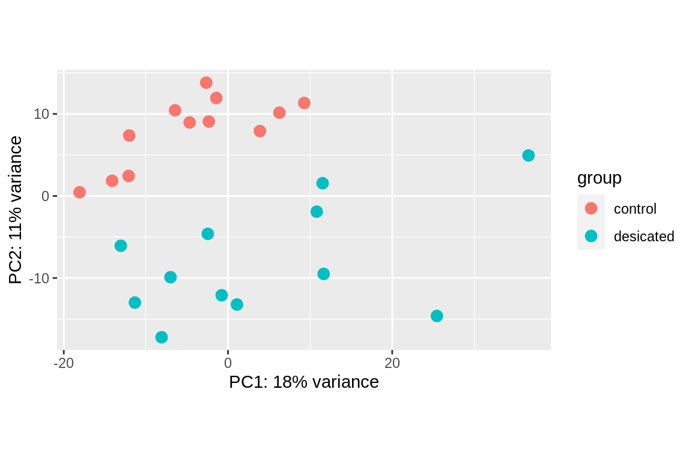
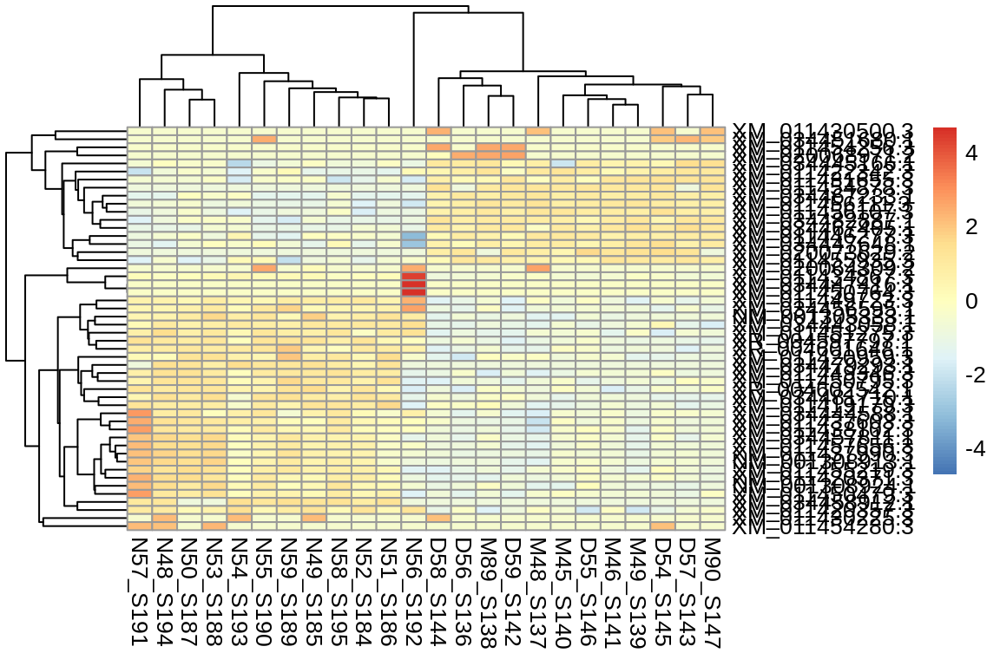
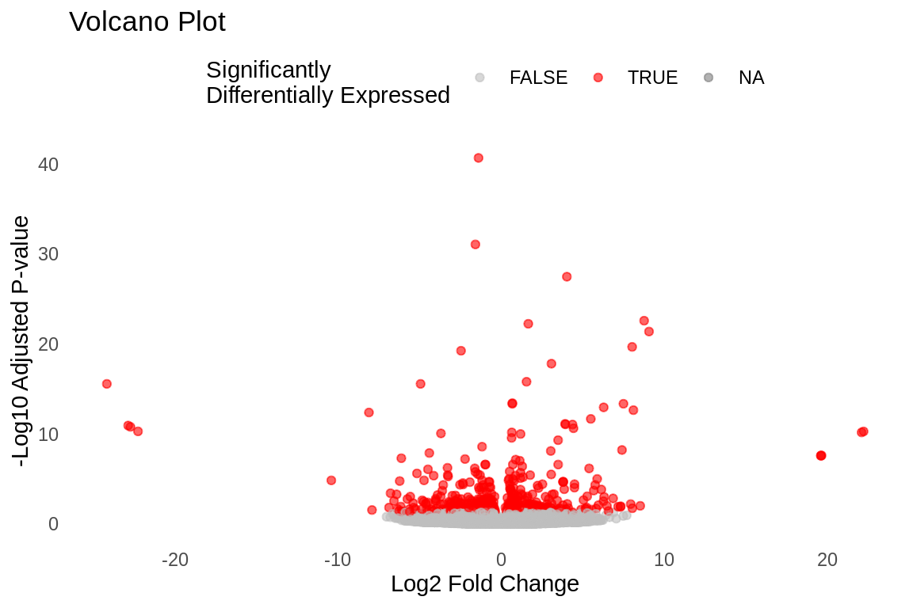

if ("knitr" %in% rownames(installed.packages()) == 'FALSE') BiocManager::install("knitr")
if ("tidyverse" %in% rownames(installed.packages()) == 'FALSE') install.packages('tidyverse')
if ("kableExtra" %in% rownames(installed.packages()) == 'FALSE') install.packages('kableExtra')
if ("pheatmap" %in% rownames(installed.packages()) == 'FALSE') install.packages('pheatmap')
if ("RColorBrewer" %in% rownames(installed.packages()) == 'FALSE') install.packages('RColorBrewer')
if ("data.table" %in% rownames(installed.packages()) == 'FALSE') install.packages('data.table')
if ("DT" %in% rownames(installed.packages()) == 'FALSE') install.packages('DT')
if ("Biostrings" %in% rownames(installed.packages()) == 'FALSE') install.packages('Biostrings')
if ("BiocManager" %in% rownames(installed.packages()) == 'FALSE') install.packages('BiocManager')
if ("DESeq2" %in% rownames(installed.packages()) == 'FALSE') BiocManager::install('DESeq2')Differential Gene Expression Analysis with Kallisto & DESeq2
a pretty report for FISH 546
Advanced Prep
For this assignment you will be taking RNA-seq data, and running a common differential gene expression analysis, without the use of a reference genome. The end product will be a number of plots and table of differentially expressed genes.
Important
Pre-reqs: This code contains relative paths that only work within the raven Roberts’ Lab Server, where the data for this assignment is housed
Install Packages
Load Libraries
library(knitr)
library(tidyverse)
library(kableExtra)
library(DESeq2)
library(pheatmap)
library(RColorBrewer)
library(data.table)
library(DT)
library(Biostrings)Setup git hooks to automatically gitignore large files
In this assignment we’re dealing with large files that will end up in the ../data and ../output directories. To prevent those large files from clogging up our ability to ‘git push’, we can use built-in hooks to automatically ignore files larger than 100 MB (no matter the directory or file name!). Here are the steps to follow:
Create a new text file in the
.git/hooks/directory of your repository calledpre-commitSelect the
Moretab with the gear icon under the RStudio Files navigator bar and select ‘show hidden files’ to see the .git folder.Add the following text to the
.git/hooks/pre-commitfile:
#!/bin/sh
# Maximum file size (in bytes)
max_file_size=104857600
# Find all files larger than max_file_size and add them to the .gitignore file
find . -type f -size +$max_file_size -exec echo "{}" >> .gitignore \;This code sets the max_file_size variable to 100 MB and then uses the find command to locate all files in the repository that are larger than the specified max_file_size. The exec option of the find command appends the name of each file that matches the criteria to the .gitignore file.
Save the pre-commit file and make it executable by running the following command in Terminal:
chmod +x .git/hooks/pre-commitWith these changes, whenever you run a git commit command, Git will first execute the pre-commit hook, which will automatically add any files larger than 100 MB to the .gitignore file. This will prevent Git from tracking these files in the repository going forward.
In the event that you accidentally committed a big file (>100MB), you can reset to the last successful git master branch push
Warning
⚠️warning this will overwrite any changes you made after your last successful push⚠️
If you still want to continue, you can un-comment the code and follow this instruction:
First, update all
origin/<branch>refs to latest:#git fetch --allBackup your current branch (e.g.
master):#git branch backup-masterJump to the latest commit on
origin/master:#git reset --hard origin/master
Running kallisto
kallisto is a software that can be downloaded and unzipped into a programs directory outside of the repo.
Kallisto is a pseudo-aligner, it does not need a genome to align to! It uses the sequences in the dataset to create it’s own ‘reference’
In our case, it is already installed on raven (/home/shared/kallisto/kallisto), and can be checked by running the version command as below:
/home/shared/kallisto/kallisto versionIf you need to download and install kallisto:
- navigate to a
programsdirectory outside of the repo- grab the applicable program from the website using
wget- uncompress the file by navigating to the
programs/kallistodirectory and runninggunzip- check functionality with
indexcommand as above
Downloading Reference
This code grabs the Pacific oyster fasta file (rna.fna) of genes and does so ignoring the fact that gannet does not have a security certificate to authenticate (--insecure). This is usually not recommended however we know the server (i.e. we trust we’re not going to get a virus from this server).
# change to work in data directory
cd ../data
# download the rna.fna file to data directory from the gannet server
curl --insecure -O https://gannet.fish.washington.edu/seashell/bu-github/nb-2023/Cgigas/data/rna.fnaIn the next code chunk we create the index file which insert what the index file is for here. Creating the index file can take some time (it is 1.6GB!) This code is indexing the file rna.fna while also renaming it as cgigas_roslin_rna.index. /home/shared/kallisto/kallisto is the absolute path to the kallisto program from within the raven server, while the lines after the index command indicate where to get the data from (the rna.fna file) and where to write the file to.
/home/shared/kallisto/kallisto \
index -i \
../data/cgigas_roslin_rna.index \
../data/rna.fnaDownload sequence reads
The samples that we are looking at in this assignment are Pacific oyster Crassostrea gigas, 12 of which are ‘control’ oysters under normal conditions, and 12 of which are ‘desiccated’, shown in this table:
| Sample | SampleID |
| D-control | D54 |
| D-control | D55 |
| D-control | D56 |
| D-control | D57 |
| D-control | D58 |
| D-control | D59 |
| D-control | M45 |
| D-control | M46 |
| D-control | M48 |
| D-control | M49 |
| D-control | M89 |
| D-control | M90 |
| D-desiccation | N48 |
| D-desiccation | N49 |
| D-desiccation | N50 |
| D-desiccation | N51 |
| D-desiccation | N52 |
| D-desiccation | N53 |
| D-desiccation | N54 |
| D-desiccation | N55 |
| D-desiccation | N56 |
| D-desiccation | N57 |
| D-desiccation | N58 |
| D-desiccation | N59 |
Sequence reads for these samples are on a public server at https://gannet.fish.washington.edu/seashell/bu-github/nb-2023/Cgigas/data/nopp/ or located at absolute path /home/shared/8TB_HDD_01/sr320/github/nb-2023/Cgigas/data.
This code uses the --recursive feature of wget to get all 24 files. Additionally as with curl above we are ignoring the fact there is not security certificate with --no-check-certificate
# move to data directory
cd ../data
# download fastq files to data directory
wget --recursive --no-parent --no-directories \
--no-check-certificate \
--accept '*.fastq.gz' \
https://gannet.fish.washington.edu/seashell/bu-github/nb-2023/Cgigas/data/nopp/Check to make sure all 24 files were downloaded successfully
# move to data directory
cd ../data
# list all files that end with `.gz` extension, count the files in the list
ls *.gz | wc -l24The next chunk performs the following steps:
- creates a subdirectory
kallisto_01in theoutputfolder usingmkdir - Uses the
findutility to search for all files in the../data/directory that match the pattern*fastq.gz. - Uses the
basenamecommand to extract the base filename of each file (i.e., the filename without the directory path), and removes the suffix_L001_R1_001.fastq.gz. - Runs the kallisto
quantcommand on each input file, with the following options: -i ../data/cgigas_roslin_rna.index: Use the kallisto index file located at../data/cgigas_roslin_rna.index.-o ../output/kallisto_01/{}: Write the output files to a directory called../output/kallisto_01/with a subdirectory named after the base filename of the input file (the {} is a placeholder for the base filename).-t 40: Use 40 threads for the computation.--single -l 100 -s 10: Specify that the input file contains single-end reads (–single), with an average read length of 100 (-l 100) and a standard deviation of 10 (-s 10).- The input file to process is specified using the {} placeholder, which is replaced by the base filename from the previous step.
# mkdir ../output/kallisto_01
find ../data/*fastq.gz \
| xargs basename -s _L001_R1_001.fastq.gz | xargs -I{} /home/shared/kallisto/kallisto \
quant -i ../data/cgigas_roslin_rna.index \
-o ../output/kallisto_01/{} \
-t 40 \
--single -l 100 -s 10 ../data/{}_L001_R1_001.fastq.gzThis next command runs the abundance_estimates_to_matrix.pl script from the Trinity RNA-seq assembly software package to create a gene expression matrix from kallisto output files.
The specific options and arguments used in the command are as follows:
perl /home/shared/trinityrnaseq-v2.12.0/util/abundance_estimates_to_matrix.pl: Run the abundance_estimates_to_matrix.pl script from Trinity.--est_method kallisto: Specify that the abundance estimates were generated using kallisto.--gene_trans_map none: Do not use a gene-to-transcript mapping file.--out_prefix ../output/kallisto_01: Use ../output/kallisto_01 as the output directory and prefix for the gene expression matrix file.--name_sample_by_basedir: Use the sample directory name (i.e., the final directory in the input file paths) as the sample name in the output matrix.- And then there are the kallisto abundance files to use as input for creating the gene expression matrix.
perl /home/shared/trinityrnaseq-v2.12.0/util/abundance_estimates_to_matrix.pl \
--est_method kallisto \
--gene_trans_map none \
--out_prefix ../output/kallisto_01 \
--name_sample_by_basedir \
../output/kallisto_01/D54_S145/abundance.tsv \
../output/kallisto_01/D56_S136/abundance.tsv \
../output/kallisto_01/D58_S144/abundance.tsv \
../output/kallisto_01/M45_S140/abundance.tsv \
../output/kallisto_01/M48_S137/abundance.tsv \
../output/kallisto_01/M89_S138/abundance.tsv \
../output/kallisto_01/D55_S146/abundance.tsv \
../output/kallisto_01/D57_S143/abundance.tsv \
../output/kallisto_01/D59_S142/abundance.tsv \
../output/kallisto_01/M46_S141/abundance.tsv \
../output/kallisto_01/M49_S139/abundance.tsv \
../output/kallisto_01/M90_S147/abundance.tsv \
../output/kallisto_01/N48_S194/abundance.tsv \
../output/kallisto_01/N50_S187/abundance.tsv \
../output/kallisto_01/N52_S184/abundance.tsv \
../output/kallisto_01/N54_S193/abundance.tsv \
../output/kallisto_01/N56_S192/abundance.tsv \
../output/kallisto_01/N58_S195/abundance.tsv \
../output/kallisto_01/N49_S185/abundance.tsv \
../output/kallisto_01/N51_S186/abundance.tsv \
../output/kallisto_01/N53_S188/abundance.tsv \
../output/kallisto_01/N55_S190/abundance.tsv \
../output/kallisto_01/N57_S191/abundance.tsv \
../output/kallisto_01/N59_S189/abundance.tsv
Running DESeq2
This code performs differential expression analysis to identify deferentially expressed genes (DEGs) between a control condition and a desiccated condition in Pacific oysters.
First, it reads in a count matrix of isoform counts generated by kallisto, with row names set to the gene/transcript IDs and the first column removed. It then rounds the counts to whole numbers.
The results() function is used to extract the results table, which is ordered by gene/transcript ID.
The code then prints the top few rows of the results table and calculates the number of DEGs with an adjusted p-value less than or equal to 0.05. It plots the log2 fold changes versus the mean normalized counts for all genes, highlighting significant DEGs in red and adding horizontal lines at 2-fold upregulation and downregulation. Finally, it writes the list of significant DEGs to a file called “DEGlist.tab”.
Read in count matrix
countmatrix <- read.delim("../output/kallisto_01.isoform.counts.matrix", header = TRUE, sep = '\t')
rownames(countmatrix) <- countmatrix$X
countmatrix <- countmatrix[,-1]
head(countmatrix) D54_S145 D56_S136 D58_S144 M45_S140 M48_S137 M89_S138 D55_S146
XM_011445263.3 3.0000 6.0000 3.00000 6.00000 15.0000 6.00000 5.0000
XR_004600192.1 0.0000 0.0000 5.58188 0.00000 0.0000 0.00000 0.0000
XM_034469868.1 65.9994 65.9996 48.00000 51.99950 60.9995 51.99950 68.9997
XM_034479134.1 0.0000 0.0000 0.00000 0.00000 0.0000 0.00000 0.0000
XM_034446498.1 0.0000 0.0000 0.00000 0.00000 0.0000 20.77020 0.0000
XM_034459635.1 0.0000 4.0000 1.00000 0.16843 0.0000 3.73389 0.0000
D57_S143 D59_S142 M46_S141 M49_S139 M90_S147 N48_S194
XM_011445263.3 12.0000 6.0000 3.0000 3.00000 8.000000000 3.0000
XR_004600192.1 0.0000 0.0000 0.0000 0.00000 1.129220000 1.0000
XM_034469868.1 59.9994 42.9998 50.9997 5.31287 0.000298258 63.9995
XM_034479134.1 0.0000 0.0000 0.0000 0.00000 0.000000000 0.0000
XM_034446498.1 0.0000 0.0000 0.0000 0.00000 0.000000000 0.0000
XM_034459635.1 0.0000 0.0000 1.0000 1.00000 0.000000000 0.0000
N50_S187 N52_S184 N54_S193 N56_S192 N58_S195 N49_S185 N51_S186
XM_011445263.3 6.0000 2.0000 4.00000 1 9.000 8.0000 2.000
XR_004600192.1 0.0000 0.0000 5.58188 0 0.000 0.0000 4.000
XM_034469868.1 74.9993 64.9997 39.99960 0 118.999 88.9993 138.998
XM_034479134.1 0.0000 0.0000 0.00000 0 0.000 0.0000 0.000
XM_034446498.1 0.0000 2.0000 0.00000 0 0.000 0.0000 0.000
XM_034459635.1 0.0000 0.0000 0.00000 0 0.000 0.0000 0.000
N53_S188 N55_S190 N57_S191 N59_S189
XM_011445263.3 7.0000 2.0000 4.0000 6.00000
XR_004600192.1 0.0000 0.0000 0.0000 4.07503
XM_034469868.1 80.9993 59.9996 24.9999 40.99970
XM_034479134.1 0.0000 0.0000 0.0000 0.00000
XM_034446498.1 0.0000 0.0000 0.0000 0.00000
XM_034459635.1 0.0000 0.0000 1.0000 0.00000Round integers up to whole numbers for analysis
countmatrix <- round(countmatrix, 0)
str(countmatrix)'data.frame': 73307 obs. of 24 variables:
$ D54_S145: num 3 0 66 0 0 0 3 0 0 0 ...
$ D56_S136: num 6 0 66 0 0 4 0 73 0 0 ...
$ D58_S144: num 3 6 48 0 0 1 0 74 0 0 ...
$ M45_S140: num 6 0 52 0 0 0 0 0 0 0 ...
$ M48_S137: num 15 0 61 0 0 0 0 49 0 0 ...
$ M89_S138: num 6 0 52 0 21 4 0 70 0 0 ...
$ D55_S146: num 5 0 69 0 0 0 0 85 0 0 ...
$ D57_S143: num 12 0 60 0 0 0 0 50 0 0 ...
$ D59_S142: num 6 0 43 0 0 0 0 57 0 0 ...
$ M46_S141: num 3 0 51 0 0 1 3 67 0 0 ...
$ M49_S139: num 3 0 5 0 0 1 0 68 0 0 ...
$ M90_S147: num 8 1 0 0 0 0 0 65 0 0 ...
$ N48_S194: num 3 1 64 0 0 0 7 18 0 0 ...
$ N50_S187: num 6 0 75 0 0 0 0 50 0 0 ...
$ N52_S184: num 2 0 65 0 2 0 0 59 0 0 ...
$ N54_S193: num 4 6 40 0 0 0 0 72 0 0 ...
$ N56_S192: num 1 0 0 0 0 0 0 0 0 0 ...
$ N58_S195: num 9 0 119 0 0 0 6 0 0 0 ...
$ N49_S185: num 8 0 89 0 0 0 0 50 0 0 ...
$ N51_S186: num 2 4 139 0 0 0 13 0 0 0 ...
$ N53_S188: num 7 0 81 0 0 0 0 56 0 0 ...
$ N55_S190: num 2 0 60 0 0 0 0 0 0 0 ...
$ N57_S191: num 4 0 25 0 0 1 0 62 0 0 ...
$ N59_S189: num 6 4 41 0 0 0 0 47 0 0 ...Here the code creates a data.frame named deseq2.colData containing information about the experimental conditions (control & desiccated). It uses the column data dataframe named deseq2.colData to create a DESeqDataSet object using the DESeqDataSetFromMatrix function from the DESeq2 package.
deseq2.colData <- data.frame(condition=factor(c(rep("control", 12), rep("desicated", 12))),
type=factor(rep("single-read", 24)))
# set row names to match the column names in the count matrix
rownames(deseq2.colData) <- colnames(data)
# DESeqDataSet object created using the `DESeqDataSetFromMatrix` function
deseq2.dds <- DESeqDataSetFromMatrix(countData = countmatrix,
colData = deseq2.colData,
design = ~ condition)converting counts to integer modeThe DESeqDataSet object, named deseq.dds, is then passed to the DESeq() function to fit a negative binomial model and estimate dispersions.
deseq2.dds <- DESeq(deseq2.dds)estimating size factorsestimating dispersionsgene-wise dispersion estimatesmean-dispersion relationshipfinal dispersion estimatesfitting model and testing-- replacing outliers and refitting for 5677 genes
-- DESeq argument 'minReplicatesForReplace' = 7
-- original counts are preserved in counts(dds)estimating dispersionsfitting model and testingdeseq2.res <- results(deseq2.dds)
deseq2.res <- deseq2.res[order(rownames(deseq2.res)), ]head(deseq2.res)log2 fold change (MLE): condition desicated vs control
Wald test p-value: condition desicated vs control
DataFrame with 6 rows and 6 columns
baseMean log2FoldChange lfcSE stat pvalue
<numeric> <numeric> <numeric> <numeric> <numeric>
NM_001305288.1 0.181270 1.0453698 3.002647 0.348149 7.27728e-01
NM_001305289.1 0.881457 -2.8119577 1.068276 -2.632239 8.48240e-03
NM_001305290.1 145.913728 0.4580323 0.116185 3.942251 8.07203e-05
NM_001305291.1 0.261701 0.5618449 1.587076 0.354013 7.23329e-01
NM_001305292.1 2.902430 -1.2181330 0.763421 -1.595624 1.10573e-01
NM_001305293.1 234.342117 0.0663449 0.131969 0.502731 6.15154e-01
padj
<numeric>
NM_001305288.1 NA
NM_001305289.1 NA
NM_001305290.1 0.00956401
NM_001305291.1 NA
NM_001305292.1 0.59541971
NM_001305293.1 0.95562321Count number of hits with adjusted p-value less then 0.05
dim(deseq2.res[!is.na(deseq2.res$padj) & deseq2.res$padj <= 0.05, ])[1] 607 6Plotting DESeq2 matrix counts
Principle Component Analysis plot
What is PCA? Very simply, PCA dimensionally reduces the number of variables of a data set while preserving as much information as possible.
vsd <- vst(deseq2.dds, blind = FALSE)
plotPCA(vsd, intgroup = "condition")
Heatmap plot
# Select top 50 differentially expressed genes
res <- results(deseq2.dds)
res_ordered <- res[order(res$padj), ]
top_genes <- row.names(res_ordered)[1:50]
# Extract counts and normalize
counts <- counts(deseq2.dds, normalized = TRUE)
counts_top <- counts[top_genes, ]
# Log-transform counts
log_counts_top <- log2(counts_top + 1)
# Generate heatmap
pheatmap(log_counts_top, scale = "row")
Understanding Log2 Fold Change
First Checkout this great article Comparing experimental conditions: differential expression analysis
In the article linked above, Fold Change is explained: Fold change: For a given comparison, a positive fold change value indicates an increase of expression, while a negative fold change indicates a decrease in expression. This value is typically reported in logarithmic scale (base 2). For example, log2 fold change of 1.5 for a specific gene in the “WT vs KO comparison” means that the expression of that gene is increased in WT relative to KO by a multiplicative factor of 2^1.5 ≈ 2.82.
tmp <- deseq2.res
# The main plot
plot(tmp$baseMean, tmp$log2FoldChange, pch=20, cex=0.45, ylim=c(-3, 3), log="x", col="darkgray",
main="DEG Dessication (pval <= 0.05)",
xlab="mean of normalized counts",
ylab="Log2 Fold Change")
# Getting the significant points and plotting them again so they're a different color
tmp.sig <- deseq2.res[!is.na(deseq2.res$padj) & deseq2.res$padj <= 0.05, ]
points(tmp.sig$baseMean, tmp.sig$log2FoldChange, pch=20, cex=0.45, col="red")
# 2 FC lines
abline(h=c(-1,1), col="blue")Volcano plot
# Prepare the data for plotting
res_df <- as.data.frame(deseq2.res)
res_df$gene <- row.names(res_df)
# Create volcano plot
volcano_plot <- ggplot(res_df, aes(x = log2FoldChange, y = -log10(padj), color = padj < 0.05)) +
geom_point(alpha = 0.6, size = 1.5) +
scale_color_manual(values = c("grey", "red")) +
labs(title = "Volcano Plot",
x = "Log2 Fold Change",
y = "-Log10 Adjusted P-value",
color = "Significantly\nDifferentially Expressed") +
theme_minimal() +
theme(panel.grid.major = element_blank(),
panel.grid.minor = element_blank(),
legend.position = "top")
print(volcano_plot)Warning: Removed 41435 rows containing missing values (`geom_point()`).
Save the list of Differentially Expressed Genes (DEGs)! Write the output to a table
write.table(tmp.sig, "../output/DEGlist.tab", sep = '\t', row.names = T)Let’s take a look at this list…
deglist <- read.csv("../output/DEGlist.tab", sep = '\t', header = TRUE)
deglist$RowName <- rownames(deglist)
deglist2 <- deglist[, c("RowName", "pvalue")] # Optionally, reorder the columns
print(deglist2) RowName pvalue
NM_001305290.1 NM_001305290.1 8.072030e-05
NM_001305310.1 NM_001305310.1 2.840948e-09
NM_001305333.1 NM_001305333.1 8.958816e-27
NM_001305339.1 NM_001305339.1 4.017360e-05
NM_001305362.1 NM_001305362.1 1.724961e-08
NM_001305373.1 NM_001305373.1 5.435026e-04
NM_001308854.1 NM_001308854.1 7.943380e-04
NM_001308861.1 NM_001308861.1 7.478144e-04
NM_001308879.1 NM_001308879.1 1.968479e-04
NM_001308913.1 NM_001308913.1 4.643630e-24
NM_001308924.1 NM_001308924.1 1.269734e-15
XM_011413623.3 XM_011413623.3 3.341473e-04
XM_011413703.3 XM_011413703.3 1.283206e-07
XM_011413735.3 XM_011413735.3 7.905600e-04
XM_011413737.3 XM_011413737.3 2.676974e-07
XM_011413957.2 XM_011413957.2 3.219768e-04
XM_011413989.3 XM_011413989.3 1.628797e-05
XM_011414589.3 XM_011414589.3 3.515308e-04
XM_011414951.3 XM_011414951.3 2.104364e-04
XM_011415190.3 XM_011415190.3 8.445948e-04
XM_011416606.3 XM_011416606.3 4.258033e-06
XM_011416726.3 XM_011416726.3 8.365440e-09
XM_011416892.3 XM_011416892.3 3.542968e-04
XM_011416960.3 XM_011416960.3 7.719401e-04
XM_011417063.3 XM_011417063.3 1.599678e-05
XM_011417064.3 XM_011417064.3 2.463779e-05
XM_011417316.3 XM_011417316.3 8.282149e-04
XM_011417317.3 XM_011417317.3 1.790747e-06
XM_011417325.3 XM_011417325.3 8.269997e-06
XM_011417799.3 XM_011417799.3 8.727681e-05
XM_011417830.3 XM_011417830.3 4.033709e-04
XM_011417902.3 XM_011417902.3 2.481092e-06
XM_011417904.3 XM_011417904.3 6.196655e-05
XM_011417908.2 XM_011417908.2 1.496858e-04
XM_011418768.3 XM_011418768.3 1.052753e-04
XM_011418872.3 XM_011418872.3 6.146797e-05
XM_011418954.3 XM_011418954.3 1.400589e-05
XM_011419041.3 XM_011419041.3 5.273378e-06
XM_011419098.3 XM_011419098.3 5.879070e-06
XM_011419179.3 XM_011419179.3 9.649033e-11
XM_011419181.3 XM_011419181.3 1.399368e-04
XM_011419576.3 XM_011419576.3 2.504552e-09
XM_011419645.3 XM_011419645.3 1.621821e-04
XM_011419848.3 XM_011419848.3 5.815604e-04
XM_011419981.3 XM_011419981.3 8.093151e-04
XM_011420357.3 XM_011420357.3 1.313937e-10
XM_011420371.3 XM_011420371.3 6.232830e-15
XM_011420372.3 XM_011420372.3 1.594096e-04
XM_011420610.3 XM_011420610.3 1.349271e-04
XM_011420631.3 XM_011420631.3 6.266213e-04
XM_011420662.3 XM_011420662.3 8.451658e-04
XM_011420824.3 XM_011420824.3 3.929574e-06
XM_011420913.3 XM_011420913.3 6.054161e-04
XM_011420959.3 XM_011420959.3 6.145874e-10
XM_011420983.3 XM_011420983.3 3.085362e-05
XM_011421012.3 XM_011421012.3 4.825696e-05
XM_011421699.3 XM_011421699.3 3.494920e-04
XM_011422329.3 XM_011422329.3 1.768261e-04
XM_011422342.3 XM_011422342.3 2.790392e-12
XM_011422632.3 XM_011422632.3 4.257736e-05
XM_011422990.3 XM_011422990.3 4.380082e-04
XM_011423572.3 XM_011423572.3 9.231433e-05
XM_011424137.3 XM_011424137.3 2.244469e-05
XM_011424142.3 XM_011424142.3 1.998279e-05
XM_011424173.3 XM_011424173.3 6.914821e-05
XM_011424596.3 XM_011424596.3 2.834022e-04
XM_011424712.3 XM_011424712.3 4.988908e-08
XM_011425176.3 XM_011425176.3 2.490140e-07
XM_011425181.3 XM_011425181.3 6.706015e-04
XM_011425228.3 XM_011425228.3 1.240413e-04
XM_011425478.3 XM_011425478.3 5.327806e-08
XM_011425483.3 XM_011425483.3 8.836866e-07
XM_011425751.3 XM_011425751.3 2.728475e-04
XM_011425772.3 XM_011425772.3 1.243186e-04
XM_011425989.3 XM_011425989.3 5.147332e-07
XM_011426213.3 XM_011426213.3 4.427574e-05
XM_011426240.3 XM_011426240.3 4.470697e-05
XM_011426321.3 XM_011426321.3 2.276575e-04
XM_011426616.3 XM_011426616.3 5.405379e-04
XM_011426647.3 XM_011426647.3 6.577317e-04
XM_011426829.3 XM_011426829.3 1.372115e-06
XM_011426844.3 XM_011426844.3 9.468090e-04
XM_011426889.3 XM_011426889.3 7.867222e-04
XM_011427084.3 XM_011427084.3 1.837089e-06
XM_011427263.3 XM_011427263.3 1.337532e-05
XM_011427409.3 XM_011427409.3 9.069434e-04
XM_011427593.3 XM_011427593.3 4.903471e-04
XM_011428050.3 XM_011428050.3 1.611654e-05
XM_011428302.3 XM_011428302.3 8.271304e-05
XM_011428362.3 XM_011428362.3 5.454487e-04
XM_011428813.3 XM_011428813.3 3.319558e-04
XM_011429405.3 XM_011429405.3 8.260076e-04
XM_011429412.3 XM_011429412.3 2.291506e-04
XM_011429469.3 XM_011429469.3 8.551627e-04
XM_011429964.3 XM_011429964.3 3.495286e-04
XM_011430087.3 XM_011430087.3 3.334114e-05
XM_011430130.2 XM_011430130.2 9.341891e-04
XM_011430224.3 XM_011430224.3 7.012039e-07
XM_011430225.3 XM_011430225.3 4.462257e-14
XM_011430243.2 XM_011430243.2 8.980812e-06
XM_011430257.3 XM_011430257.3 4.458083e-04
XM_011430301.3 XM_011430301.3 2.700597e-06
XM_011430339.3 XM_011430339.3 7.373078e-05
XM_011430436.3 XM_011430436.3 4.411238e-04
XM_011430500.3 XM_011430500.3 9.838417e-20
XM_011430508.3 XM_011430508.3 3.790199e-04
XM_011430645.3 XM_011430645.3 3.025029e-05
XM_011430696.3 XM_011430696.3 4.536149e-04
XM_011430699.3 XM_011430699.3 1.050920e-05
XM_011430921.3 XM_011430921.3 3.641187e-05
XM_011430923.3 XM_011430923.3 1.149529e-07
XM_011431087.3 XM_011431087.3 6.355809e-06
XM_011431174.3 XM_011431174.3 5.385485e-05
XM_011431272.3 XM_011431272.3 4.454120e-04
XM_011431577.3 XM_011431577.3 9.961600e-05
XM_011431655.3 XM_011431655.3 8.177482e-14
XM_011431825.3 XM_011431825.3 2.649959e-04
XM_011431987.3 XM_011431987.3 2.307602e-05
XM_011431991.3 XM_011431991.3 5.855456e-05
XM_011432386.3 XM_011432386.3 1.218110e-05
XM_011432388.3 XM_011432388.3 4.164735e-05
XM_011432500.3 XM_011432500.3 7.828421e-05
XM_011432571.3 XM_011432571.3 2.905640e-04
XM_011432647.3 XM_011432647.3 1.010575e-04
XM_011432819.3 XM_011432819.3 9.321109e-04
XM_011432843.3 XM_011432843.3 3.633636e-04
XM_011432913.3 XM_011432913.3 7.187936e-04
XM_011433143.3 XM_011433143.3 1.683032e-04
XM_011433170.3 XM_011433170.3 1.266364e-04
XM_011433250.3 XM_011433250.3 3.353189e-05
XM_011433640.3 XM_011433640.3 2.155177e-08
XM_011433641.3 XM_011433641.3 1.621288e-04
XM_011433645.3 XM_011433645.3 1.939482e-06
XM_011433685.2 XM_011433685.2 6.216901e-05
XM_011433770.3 XM_011433770.3 5.142541e-05
XM_011433782.3 XM_011433782.3 8.103463e-04
XM_011433858.3 XM_011433858.3 1.943246e-05
XM_011434034.3 XM_011434034.3 2.574077e-04
XM_011434093.3 XM_011434093.3 1.828047e-04
XM_011434186.3 XM_011434186.3 1.944177e-04
XM_011434432.3 XM_011434432.3 4.984199e-05
XM_011434464.3 XM_011434464.3 6.656349e-04
XM_011434591.3 XM_011434591.3 2.222824e-04
XM_011434867.3 XM_011434867.3 6.073406e-14
XM_011435315.3 XM_011435315.3 1.542280e-04
XM_011435569.3 XM_011435569.3 8.991256e-04
XM_011435952.3 XM_011435952.3 7.612858e-04
XM_011436004.3 XM_011436004.3 2.321961e-04
XM_011436622.3 XM_011436622.3 3.082360e-05
XM_011436623.3 XM_011436623.3 4.914438e-04
XM_011436760.3 XM_011436760.3 2.661631e-04
XM_011436951.3 XM_011436951.3 7.678790e-04
XM_011437136.3 XM_011437136.3 1.668206e-04
XM_011437363.3 XM_011437363.3 1.160009e-04
XM_011437364.3 XM_011437364.3 2.430250e-04
XM_011437548.3 XM_011437548.3 2.040561e-06
XM_011437549.3 XM_011437549.3 1.512987e-04
XM_011437582.3 XM_011437582.3 3.985999e-04
XM_011437603.3 XM_011437603.3 5.660897e-15
XM_011437870.3 XM_011437870.3 5.699066e-04
XM_011437990.3 XM_011437990.3 3.251836e-27
XM_011438030.3 XM_011438030.3 3.287878e-08
XM_011438102.3 XM_011438102.3 8.791792e-12
XM_011438148.3 XM_011438148.3 4.742145e-04
XM_011438370.3 XM_011438370.3 6.574680e-04
XM_011438573.3 XM_011438573.3 3.467842e-04
XM_011439059.3 XM_011439059.3 5.329001e-04
XM_011440038.3 XM_011440038.3 3.363217e-04
XM_011440133.3 XM_011440133.3 7.948007e-04
XM_011440434.3 XM_011440434.3 2.051335e-05
XM_011440442.3 XM_011440442.3 7.167089e-05
XM_011440790.3 XM_011440790.3 8.456193e-05
XM_011441056.3 XM_011441056.3 1.775495e-06
XM_011441100.3 XM_011441100.3 7.349289e-04
XM_011441269.3 XM_011441269.3 2.454320e-05
XM_011441367.3 XM_011441367.3 1.828695e-04
XM_011441514.3 XM_011441514.3 2.264977e-04
XM_011441523.3 XM_011441523.3 1.865142e-04
XM_011441619.3 XM_011441619.3 9.314000e-04
XM_011441686.3 XM_011441686.3 3.279884e-04
XM_011441767.3 XM_011441767.3 3.516172e-04
XM_011442016.3 XM_011442016.3 2.153606e-05
XM_011442020.3 XM_011442020.3 4.435229e-05
XM_011442175.3 XM_011442175.3 7.982896e-04
XM_011442247.3 XM_011442247.3 1.851390e-04
XM_011442617.3 XM_011442617.3 1.631372e-04
XM_011443066.3 XM_011443066.3 2.226401e-08
XM_011443186.3 XM_011443186.3 1.562053e-04
XM_011443323.3 XM_011443323.3 5.703132e-04
XM_011443599.3 XM_011443599.3 2.107523e-04
XM_011443620.3 XM_011443620.3 4.064874e-05
XM_011443836.3 XM_011443836.3 3.058180e-05
XM_011444212.3 XM_011444212.3 3.002250e-04
XM_011444215.2 XM_011444215.2 3.002250e-04
XM_011444354.3 XM_011444354.3 4.483641e-04
XM_011444450.3 XM_011444450.3 2.307010e-04
XM_011444504.3 XM_011444504.3 1.838434e-04
XM_011444981.3 XM_011444981.3 1.047025e-04
XM_011445239.3 XM_011445239.3 6.078286e-05
XM_011445240.3 XM_011445240.3 9.514162e-04
XM_011445288.3 XM_011445288.3 5.547119e-04
XM_011445572.3 XM_011445572.3 2.337850e-04
XM_011445615.3 XM_011445615.3 8.719003e-04
XM_011445887.3 XM_011445887.3 4.540377e-04
XM_011445894.3 XM_011445894.3 1.945863e-06
XM_011445901.3 XM_011445901.3 5.811564e-05
XM_011445971.3 XM_011445971.3 1.722026e-04
XM_011446090.3 XM_011446090.3 1.110955e-05
XM_011446139.3 XM_011446139.3 6.179039e-06
XM_011446277.3 XM_011446277.3 8.081690e-11
XM_011446311.3 XM_011446311.3 2.996434e-04
XM_011446726.2 XM_011446726.2 3.783771e-06
XM_011446920.3 XM_011446920.3 4.488532e-05
XM_011447253.3 XM_011447253.3 4.924094e-05
XM_011447370.3 XM_011447370.3 2.785468e-04
XM_011447398.3 XM_011447398.3 7.344561e-04
XM_011447411.3 XM_011447411.3 4.102261e-08
XM_011447654.3 XM_011447654.3 4.677597e-07
XM_011448021.3 XM_011448021.3 1.946854e-04
XM_011448507.3 XM_011448507.3 8.472484e-04
XM_011448744.3 XM_011448744.3 8.610693e-05
XM_011448822.3 XM_011448822.3 2.558331e-04
XM_011448927.3 XM_011448927.3 3.331734e-05
XM_011448982.2 XM_011448982.2 2.081174e-05
XM_011449189.3 XM_011449189.3 1.454937e-05
XM_011449346.3 XM_011449346.3 4.972052e-20
XM_011449438.3 XM_011449438.3 2.611878e-04
XM_011449497.3 XM_011449497.3 9.361044e-05
XM_011449510.3 XM_011449510.3 4.396790e-05
XM_011449723.3 XM_011449723.3 9.856303e-14
XM_011449777.3 XM_011449777.3 3.490440e-04
XM_011449847.3 XM_011449847.3 8.496448e-04
XM_011450148.3 XM_011450148.3 1.764834e-04
XM_011450198.3 XM_011450198.3 3.052080e-04
XM_011450350.3 XM_011450350.3 3.378430e-04
XM_011450391.3 XM_011450391.3 1.596057e-05
XM_011450479.3 XM_011450479.3 5.093129e-13
XM_011450557.3 XM_011450557.3 3.903654e-05
XM_011450764.3 XM_011450764.3 3.242450e-11
XM_011450795.3 XM_011450795.3 2.765626e-13
XM_011450825.3 XM_011450825.3 5.380205e-06
XM_011450883.3 XM_011450883.3 4.602595e-04
XM_011451275.3 XM_011451275.3 2.020877e-17
XM_011451289.3 XM_011451289.3 1.681236e-05
XM_011452018.3 XM_011452018.3 4.185758e-04
XM_011452055.3 XM_011452055.3 1.943938e-04
XM_011452448.3 XM_011452448.3 5.897365e-04
XM_011452951.3 XM_011452951.3 3.390612e-08
XM_011453183.3 XM_011453183.3 2.516464e-04
XM_011453270.3 XM_011453270.3 6.215093e-04
XM_011453340.3 XM_011453340.3 4.014111e-04
XM_011453448.3 XM_011453448.3 4.090423e-04
XM_011453524.3 XM_011453524.3 6.193106e-04
XM_011453578.3 XM_011453578.3 1.477097e-04
XM_011453647.3 XM_011453647.3 8.677712e-04
XM_011453904.3 XM_011453904.3 4.413058e-04
XM_011453975.3 XM_011453975.3 5.367059e-04
XM_011453979.3 XM_011453979.3 2.831819e-05
XM_011453981.3 XM_011453981.3 1.137018e-05
XM_011454256.3 XM_011454256.3 8.417929e-15
XM_011454280.3 XM_011454280.3 6.131833e-14
XM_011454878.3 XM_011454878.3 2.330149e-16
XM_011454880.3 XM_011454880.3 1.018422e-07
XM_011454889.3 XM_011454889.3 9.348774e-05
XM_011454902.3 XM_011454902.3 1.301057e-08
XM_011455053.3 XM_011455053.3 1.998647e-05
XM_011455219.3 XM_011455219.3 5.572462e-17
XM_011455306.3 XM_011455306.3 1.497907e-04
XM_011455313.3 XM_011455313.3 1.645013e-04
XM_011455565.3 XM_011455565.3 1.156866e-05
XM_011455894.3 XM_011455894.3 1.492878e-04
XM_011455935.3 XM_011455935.3 3.809274e-10
XM_011456001.3 XM_011456001.3 5.555404e-06
XM_011456072.3 XM_011456072.3 1.705088e-04
XM_011456091.3 XM_011456091.3 4.607340e-04
XM_011456107.3 XM_011456107.3 5.394168e-36
XM_011456110.3 XM_011456110.3 4.360965e-04
XM_011456111.3 XM_011456111.3 6.592538e-46
XM_011456293.3 XM_011456293.3 1.736041e-05
XM_011456384.3 XM_011456384.3 7.218239e-09
XM_011456565.3 XM_011456565.3 1.454823e-04
XM_011456757.3 XM_011456757.3 1.337984e-07
XM_011456825.3 XM_011456825.3 1.620549e-04
XM_011456828.3 XM_011456828.3 8.597025e-06
XM_011456964.3 XM_011456964.3 1.220101e-07
XM_011457389.3 XM_011457389.3 1.956801e-04
XM_011457628.3 XM_011457628.3 3.586745e-05
XM_011457656.3 XM_011457656.3 7.814105e-26
XM_011457739.3 XM_011457739.3 2.513792e-07
XM_011457784.3 XM_011457784.3 4.031792e-04
XM_011457800.3 XM_011457800.3 2.650057e-04
XM_011458560.3 XM_011458560.3 8.795141e-04
XM_011458845.3 XM_011458845.3 3.086529e-04
XM_020062944.2 XM_020062944.2 1.333335e-04
XM_020063357.2 XM_020063357.2 4.984665e-04
XM_020064309.2 XM_020064309.2 2.959270e-11
XM_020064854.2 XM_020064854.2 7.184448e-05
XM_020065965.2 XM_020065965.2 5.855552e-04
XM_020066097.2 XM_020066097.2 3.396556e-04
XM_020066098.2 XM_020066098.2 2.607384e-05
XM_020066456.2 XM_020066456.2 2.295996e-04
XM_020066648.2 XM_020066648.2 4.023964e-05
XM_020066761.2 XM_020066761.2 5.232830e-04
XM_020066967.2 XM_020066967.2 6.867529e-04
XM_020067267.2 XM_020067267.2 8.028750e-04
XM_020068045.2 XM_020068045.2 2.851443e-04
XM_020068497.2 XM_020068497.2 7.270422e-05
XM_020068971.2 XM_020068971.2 4.204261e-14
XM_020069400.2 XM_020069400.2 3.249686e-08
XM_020069537.2 XM_020069537.2 8.131657e-04
XM_020069792.2 XM_020069792.2 1.158998e-04
XM_020073627.2 XM_020073627.2 5.862084e-08
XM_020073629.2 XM_020073629.2 6.418309e-11
XM_020074026.2 XM_020074026.2 1.569009e-04
XM_020074730.2 XM_020074730.2 4.635312e-05
XM_034442975.1 XM_034442975.1 3.840336e-04
XM_034443058.1 XM_034443058.1 4.377029e-22
XM_034443149.1 XM_034443149.1 3.642549e-04
XM_034443357.1 XM_034443357.1 8.641703e-09
XM_034443414.1 XM_034443414.1 5.789018e-04
XM_034443437.1 XM_034443437.1 3.347250e-04
XM_034443632.1 XM_034443632.1 3.435105e-04
XM_034443959.1 XM_034443959.1 9.469317e-04
XM_034444076.1 XM_034444076.1 9.097028e-04
XM_034444094.1 XM_034444094.1 6.607847e-05
XM_034444206.1 XM_034444206.1 4.170721e-06
XM_034444207.1 XM_034444207.1 4.942211e-07
XM_034444279.1 XM_034444279.1 8.535144e-06
XM_034444525.1 XM_034444525.1 1.017785e-04
XM_034444541.1 XM_034444541.1 1.922887e-04
XM_034444588.1 XM_034444588.1 3.605585e-10
XM_034444608.1 XM_034444608.1 5.590865e-04
XM_034444855.1 XM_034444855.1 1.596776e-04
XM_034444927.1 XM_034444927.1 7.195018e-06
XM_034445074.1 XM_034445074.1 3.563884e-07
XM_034445114.1 XM_034445114.1 2.217731e-04
XM_034445166.1 XM_034445166.1 9.028046e-10
XM_034445168.1 XM_034445168.1 4.743123e-05
XM_034445353.1 XM_034445353.1 4.468274e-04
XM_034445394.1 XM_034445394.1 4.336090e-04
XM_034445622.1 XM_034445622.1 9.418965e-04
XM_034445729.1 XM_034445729.1 6.049445e-04
XM_034445754.1 XM_034445754.1 2.080792e-04
XM_034446150.1 XM_034446150.1 1.575587e-04
XM_034446317.1 XM_034446317.1 4.841940e-04
XM_034446360.1 XM_034446360.1 5.200532e-04
XM_034446422.1 XM_034446422.1 7.702703e-04
XM_034446803.1 XM_034446803.1 3.359864e-04
XM_034446824.1 XM_034446824.1 1.530405e-04
XM_034447263.1 XM_034447263.1 7.574925e-06
XM_034447416.1 XM_034447416.1 3.242450e-11
XM_034447633.1 XM_034447633.1 5.896243e-04
XM_034447648.1 XM_034447648.1 3.699486e-10
XM_034447649.1 XM_034447649.1 8.832120e-04
XM_034447990.1 XM_034447990.1 4.910609e-05
XM_034448172.1 XM_034448172.1 5.985733e-04
XM_034448197.1 XM_034448197.1 1.275907e-05
XM_034448205.1 XM_034448205.1 1.128786e-04
XM_034448240.1 XM_034448240.1 2.532638e-04
XM_034448598.1 XM_034448598.1 3.991274e-04
XM_034448601.1 XM_034448601.1 1.674858e-06
XM_034448605.1 XM_034448605.1 1.550253e-04
XM_034448759.1 XM_034448759.1 4.539049e-04
XM_034449458.1 XM_034449458.1 4.831280e-05
XM_034449476.1 XM_034449476.1 2.356865e-07
XM_034449510.1 XM_034449510.1 2.872963e-04
XM_034449775.1 XM_034449775.1 1.606687e-06
XM_034449992.1 XM_034449992.1 8.351628e-04
XM_034450019.1 XM_034450019.1 1.057068e-04
XM_034450047.1 XM_034450047.1 6.696095e-06
XM_034450222.1 XM_034450222.1 1.079717e-04
XM_034450223.1 XM_034450223.1 2.628245e-05
XM_034450567.1 XM_034450567.1 1.351596e-05
XM_034450895.1 XM_034450895.1 3.810627e-06
XM_034450951.1 XM_034450951.1 8.271615e-05
XM_034451123.1 XM_034451123.1 6.791529e-04
XM_034451574.1 XM_034451574.1 1.093051e-05
XM_034451583.1 XM_034451583.1 1.664446e-04
XM_034451662.1 XM_034451662.1 2.376278e-06
XM_034451680.1 XM_034451680.1 1.220911e-14
XM_034451960.1 XM_034451960.1 8.177951e-04
XM_034452505.1 XM_034452505.1 4.093442e-04
XM_034452506.1 XM_034452506.1 4.093442e-04
XM_034453221.1 XM_034453221.1 2.179040e-05
XM_034453254.1 XM_034453254.1 1.084965e-08
XM_034453255.1 XM_034453255.1 7.333308e-09
XM_034453471.1 XM_034453471.1 1.223768e-04
XM_034453633.1 XM_034453633.1 1.116710e-04
XM_034454002.1 XM_034454002.1 7.065463e-04
XM_034454255.1 XM_034454255.1 2.800494e-04
XM_034454272.1 XM_034454272.1 1.443804e-04
XM_034454297.1 XM_034454297.1 1.588872e-06
XM_034454369.1 XM_034454369.1 3.070209e-05
XM_034454536.1 XM_034454536.1 4.310799e-05
XM_034454589.1 XM_034454589.1 1.830524e-05
XM_034454728.1 XM_034454728.1 1.885604e-05
XM_034455079.1 XM_034455079.1 1.458134e-04
XM_034455182.1 XM_034455182.1 3.409669e-04
XM_034455456.1 XM_034455456.1 2.886280e-05
XM_034455724.1 XM_034455724.1 5.398412e-07
XM_034455886.1 XM_034455886.1 1.823993e-04
XM_034455914.1 XM_034455914.1 5.486992e-04
XM_034456029.1 XM_034456029.1 7.501301e-08
XM_034456207.1 XM_034456207.1 6.116171e-05
XM_034456217.1 XM_034456217.1 3.446075e-04
XM_034456345.1 XM_034456345.1 6.598070e-07
XM_034456594.1 XM_034456594.1 3.182113e-07
XM_034456595.1 XM_034456595.1 3.534841e-10
XM_034456614.1 XM_034456614.1 8.533173e-05
XM_034456624.1 XM_034456624.1 6.599626e-04
XM_034456663.1 XM_034456663.1 1.794975e-05
XM_034456876.1 XM_034456876.1 2.116838e-08
XM_034456917.1 XM_034456917.1 7.968309e-04
XM_034456921.1 XM_034456921.1 1.099714e-04
XM_034457089.1 XM_034457089.1 3.077860e-04
XM_034457172.1 XM_034457172.1 6.491191e-06
XM_034457229.1 XM_034457229.1 1.186154e-05
XM_034457255.1 XM_034457255.1 3.285643e-04
XM_034457257.1 XM_034457257.1 1.077374e-06
XM_034457808.1 XM_034457808.1 4.948001e-04
XM_034457809.1 XM_034457809.1 2.484949e-04
XM_034457811.1 XM_034457811.1 1.206279e-16
XM_034457978.1 XM_034457978.1 4.707551e-05
XM_034458218.1 XM_034458218.1 7.365589e-05
XM_034458316.1 XM_034458316.1 8.137147e-04
XM_034458350.1 XM_034458350.1 5.710488e-04
XM_034458351.1 XM_034458351.1 2.779413e-04
XM_034458358.1 XM_034458358.1 6.380094e-04
XM_034458362.1 XM_034458362.1 1.918776e-04
XM_034458699.1 XM_034458699.1 2.792520e-04
XM_034458742.1 XM_034458742.1 5.692878e-04
XM_034458842.1 XM_034458842.1 3.070360e-04
XM_034458843.1 XM_034458843.1 4.490098e-06
XM_034458844.1 XM_034458844.1 4.652436e-04
XM_034458868.1 XM_034458868.1 5.252155e-05
XM_034458912.1 XM_034458912.1 6.667182e-12
XM_034458915.1 XM_034458915.1 1.761169e-04
XM_034459041.1 XM_034459041.1 1.572705e-04
XM_034459403.1 XM_034459403.1 4.192064e-05
XM_034459707.1 XM_034459707.1 5.419411e-04
XM_034460299.1 XM_034460299.1 2.702812e-04
XM_034460679.1 XM_034460679.1 1.126577e-04
XM_034460779.1 XM_034460779.1 6.662518e-04
XM_034460988.1 XM_034460988.1 5.769239e-04
XM_034461638.1 XM_034461638.1 1.083652e-05
XM_034461819.1 XM_034461819.1 3.261584e-08
XM_034461937.1 XM_034461937.1 7.084653e-04
XM_034462019.1 XM_034462019.1 1.252199e-05
XM_034462237.1 XM_034462237.1 3.213631e-04
XM_034462308.1 XM_034462308.1 4.155848e-05
XM_034462375.1 XM_034462375.1 4.838005e-05
XM_034463330.1 XM_034463330.1 1.205410e-04
XM_034463341.1 XM_034463341.1 2.726679e-04
XM_034463907.1 XM_034463907.1 5.510531e-05
XM_034463916.1 XM_034463916.1 3.729423e-05
XM_034463962.1 XM_034463962.1 1.975056e-04
XM_034464015.1 XM_034464015.1 9.808425e-05
XM_034464143.1 XM_034464143.1 4.405850e-04
XM_034464492.1 XM_034464492.1 2.984429e-04
XM_034464576.1 XM_034464576.1 9.056514e-04
XM_034465003.1 XM_034465003.1 7.078959e-04
XM_034465520.1 XM_034465520.1 4.451425e-04
XM_034465546.1 XM_034465546.1 3.178107e-06
XM_034465703.1 XM_034465703.1 2.710304e-04
XM_034466028.1 XM_034466028.1 2.851503e-06
XM_034466255.1 XM_034466255.1 1.524822e-04
XM_034466358.1 XM_034466358.1 1.980239e-05
XM_034466383.1 XM_034466383.1 5.231909e-04
XM_034467108.1 XM_034467108.1 5.560037e-04
XM_034467233.1 XM_034467233.1 1.027358e-19
XM_034467405.1 XM_034467405.1 1.532168e-11
XM_034467444.1 XM_034467444.1 6.993862e-04
XM_034467569.1 XM_034467569.1 9.026365e-06
XM_034467743.1 XM_034467743.1 5.641001e-04
XM_034467848.1 XM_034467848.1 1.411389e-04
XM_034467900.1 XM_034467900.1 4.822431e-04
XM_034467910.1 XM_034467910.1 3.559567e-09
XM_034468024.1 XM_034468024.1 6.825914e-04
XM_034468098.1 XM_034468098.1 5.351244e-04
XM_034468207.1 XM_034468207.1 1.319507e-04
XM_034468303.1 XM_034468303.1 9.513781e-05
XM_034468386.1 XM_034468386.1 4.557490e-04
XM_034468456.1 XM_034468456.1 2.421276e-04
XM_034468483.1 XM_034468483.1 8.836776e-05
XM_034468505.1 XM_034468505.1 8.680508e-04
XM_034469181.1 XM_034469181.1 7.691647e-04
XM_034469434.1 XM_034469434.1 8.594454e-05
XM_034469641.1 XM_034469641.1 7.032130e-05
XM_034469689.1 XM_034469689.1 8.678371e-04
XM_034469778.1 XM_034469778.1 3.328354e-04
XM_034469790.1 XM_034469790.1 5.231962e-09
XM_034469941.1 XM_034469941.1 7.256329e-04
XM_034470068.1 XM_034470068.1 4.963052e-04
XM_034470240.1 XM_034470240.1 4.766704e-07
XM_034470321.1 XM_034470321.1 3.162646e-07
XM_034470338.1 XM_034470338.1 3.594938e-04
XM_034470402.1 XM_034470402.1 8.878884e-04
XM_034470406.1 XM_034470406.1 2.486472e-04
XM_034470452.1 XM_034470452.1 3.108764e-05
XM_034470781.1 XM_034470781.1 6.734960e-05
XM_034471023.1 XM_034471023.1 4.710808e-04
XM_034471029.1 XM_034471029.1 1.137404e-04
XM_034471052.1 XM_034471052.1 3.468622e-04
XM_034471087.1 XM_034471087.1 1.072786e-04
XM_034471156.1 XM_034471156.1 3.544658e-05
XM_034471171.1 XM_034471171.1 8.881152e-04
XM_034471181.1 XM_034471181.1 1.237374e-04
XM_034471468.1 XM_034471468.1 9.202984e-04
XM_034471632.1 XM_034471632.1 1.359851e-05
XM_034471694.1 XM_034471694.1 1.312102e-07
XM_034471697.1 XM_034471697.1 1.115809e-07
XM_034471759.1 XM_034471759.1 8.004160e-04
XM_034472096.1 XM_034472096.1 6.437565e-04
XM_034472105.1 XM_034472105.1 3.768369e-04
XM_034472119.1 XM_034472119.1 7.333177e-04
XM_034472167.1 XM_034472167.1 6.088103e-05
XM_034472465.1 XM_034472465.1 6.678226e-04
XM_034472524.1 XM_034472524.1 7.822116e-05
XM_034472602.1 XM_034472602.1 2.078094e-04
XM_034472902.1 XM_034472902.1 5.252285e-05
XM_034473158.1 XM_034473158.1 1.025005e-07
XM_034473208.1 XM_034473208.1 1.937385e-05
XM_034473522.1 XM_034473522.1 5.672145e-05
XM_034473839.1 XM_034473839.1 9.430323e-04
XM_034474036.1 XM_034474036.1 3.512059e-04
XM_034474325.1 XM_034474325.1 6.469764e-04
XM_034474636.1 XM_034474636.1 5.856818e-09
XM_034474649.1 XM_034474649.1 6.785902e-04
XM_034474866.1 XM_034474866.1 1.991705e-04
XM_034474911.1 XM_034474911.1 1.341414e-04
XM_034475156.1 XM_034475156.1 1.486754e-05
XM_034475157.1 XM_034475157.1 3.069844e-05
XM_034475818.1 XM_034475818.1 3.723054e-04
XM_034476264.1 XM_034476264.1 2.201291e-04
XM_034476388.1 XM_034476388.1 5.561025e-04
XM_034476392.1 XM_034476392.1 3.381783e-08
XM_034476517.1 XM_034476517.1 4.991357e-04
XM_034476550.1 XM_034476550.1 1.109685e-04
XM_034476829.1 XM_034476829.1 5.316835e-04
XM_034476955.1 XM_034476955.1 4.459265e-05
XM_034477015.1 XM_034477015.1 1.139735e-04
XM_034477591.1 XM_034477591.1 4.714748e-04
XM_034478134.1 XM_034478134.1 7.299513e-05
XM_034478177.1 XM_034478177.1 5.254694e-05
XM_034478323.1 XM_034478323.1 3.426433e-06
XM_034478793.1 XM_034478793.1 3.467088e-04
XM_034478830.1 XM_034478830.1 2.855895e-07
XM_034479290.1 XM_034479290.1 4.254355e-05
XM_034479293.1 XM_034479293.1 2.082503e-17
XM_034479294.1 XM_034479294.1 3.587471e-06
XM_034479721.1 XM_034479721.1 8.152942e-06
XM_034480188.1 XM_034480188.1 8.553143e-04
XM_034480222.1 XM_034480222.1 2.607857e-04
XM_034480331.1 XM_034480331.1 2.820922e-04
XM_034480902.1 XM_034480902.1 9.630334e-05
XM_034481530.1 XM_034481530.1 7.225446e-04
XM_034481710.1 XM_034481710.1 1.829434e-14
XM_034481737.1 XM_034481737.1 4.468638e-05
XM_034481740.1 XM_034481740.1 9.369491e-07
XM_034481838.1 XM_034481838.1 7.994673e-06
XM_034481868.1 XM_034481868.1 1.906178e-04
XM_034481890.1 XM_034481890.1 7.356342e-04
XM_034482247.1 XM_034482247.1 4.222645e-05
XM_034482265.1 XM_034482265.1 3.130388e-05
XM_034482414.1 XM_034482414.1 1.996983e-04
XM_034482422.1 XM_034482422.1 4.650988e-04
XM_034482608.1 XM_034482608.1 9.454392e-04
XM_034482887.1 XM_034482887.1 1.422445e-23
XM_034483005.1 XM_034483005.1 7.641044e-04
XM_034483031.1 XM_034483031.1 7.292612e-09
XM_034483390.1 XM_034483390.1 7.721930e-04
XM_034483436.1 XM_034483436.1 8.001592e-06
XM_034483547.1 XM_034483547.1 2.951803e-04
XM_034483593.1 XM_034483593.1 4.334156e-04
XR_004596035.1 XR_004596035.1 3.378543e-06
XR_004596351.1 XR_004596351.1 6.514039e-04
XR_004596743.1 XR_004596743.1 8.779485e-05
XR_004596906.1 XR_004596906.1 1.223076e-04
XR_004596944.1 XR_004596944.1 7.849050e-04
XR_004597797.1 XR_004597797.1 3.152069e-32
XR_004598294.1 XR_004598294.1 6.459200e-04
XR_004598549.1 XR_004598549.1 1.065098e-09
XR_004598733.1 XR_004598733.1 5.345791e-08
XR_004598744.1 XR_004598744.1 5.345791e-08
XR_004598752.1 XR_004598752.1 5.345791e-08
XR_004599693.1 XR_004599693.1 4.443712e-07
XR_004599841.1 XR_004599841.1 3.548311e-05
XR_004600141.1 XR_004600141.1 8.924312e-04
XR_004600166.1 XR_004600166.1 1.673982e-04
XR_004600498.1 XR_004600498.1 7.659371e-04
XR_004600500.1 XR_004600500.1 1.410860e-04
XR_004600655.1 XR_004600655.1 8.650703e-04
XR_004601051.1 XR_004601051.1 1.411872e-09
XR_004601053.1 XR_004601053.1 4.374660e-09
XR_004601648.1 XR_004601648.1 1.548974e-17
XR_004602054.1 XR_004602054.1 2.945989e-04
XR_004602139.1 XR_004602139.1 9.212988e-04
XR_004602422.1 XR_004602422.1 4.566694e-05
XR_004602535.1 XR_004602535.1 1.103822e-09
XR_004602542.1 XR_004602542.1 4.740261e-15
XR_004602869.1 XR_004602869.1 2.635202e-07
XR_004603302.1 XR_004603302.1 6.073043e-04
XR_004604213.1 XR_004604213.1 4.649457e-04
XR_898264.3 XR_898264.3 1.204913e-04
XR_901070.3 XR_901070.3 4.558587e-05
XR_902175.3 XR_902175.3 1.593495e-07
XR_903526.3 XR_903526.3 1.458988e-04